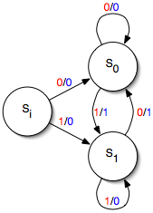

Simple Mealy
The "theoretical computer science" picture of a Mealy machine is seen below:
Here si is the start state, and there are two other states, s0 and s1. There is also an alphabet consisting of 0 and 1. On the transitions, a red digit denotes an input and a blue digit denotes an output, so, in the machine is currently in state si and receives a 1 as input, it outputs a 0 and proceeds to state s1.
The ReWire code described in the section is found here, SimpleMealy.hs, and what follows is a line-by-line description.
First thing is to import a library with ReWire definitions, etc. What's DataKinds? Don't worry about it for now. Collected in a comment is a tabular form of the state transitions.
{-# LANGUAGE DataKinds #-}
import ReWire
-- Current State | Input | Output | Next State
-- --------------------------------------------
-- si 0 0 s0
-- si 1 0 s1
-- s0 0 0 s0
-- s0 1 1 s1
-- s1 0 1 s0
-- s1 1 0 s1
Next, let's define the alphabet:
data Alphabet = Zero | One
Alphabet defines both the inputs and outputs of this Mealy machine.
Each of the three states and their transitions are defined in the following. Before focusing on the type, note first how each line below corresponds directly to a line in the table above. E.g., if the machine is in state si and receives 0 as input, it produces output 0, and proceeds to state s0.
si , s0 , s1 :: Alphabet -> ReacT Alphabet Alphabet Identity ()
si Zero = signal Zero >>= s0
si One = signal Zero >>= s1
s0 Zero = signal Zero >>= s0
s0 One = signal One >>= s1
s1 Zero = signal One >>= s0
s1 One = signal Zero >>= s1
We'll return to the types of si, s0, and s1 momentarily.
Finally, we need to designate a start state, just as with any state machine definition.
start :: ReacT Alphabet Alphabet Identity ()
start = signal Zero >>= si
Why this type ReacT Alphabet Alphabet Identity ()?
We know the type will have the form ReacT i o m a for some types i, o, and a and monad m.
- The input alphabet is
Alphabet, soiisAlphabet. - The output alphabet is
Alphabet, soois alsoAlphabet. - We are not using internal storage like registers, so monad
mcan be justIdentity.
Finally, why () for return type a? Here, we have a choice, but it doesn't matter in the least what we pick. Because start never, ever, terminates under any circumstances, it won't ever return any value, so we may as well pick ().
This non-termination requirement on start is important and makes complete sense if you think about it. Hardware never terminates (unless it's unplugged).